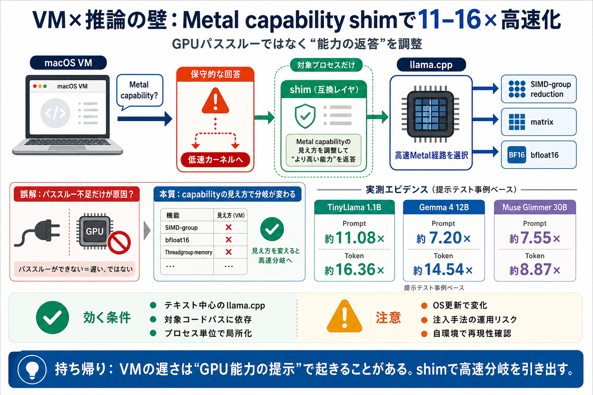

cua/blog/gpu-passthrough-macos-vms.md at main · trycua/cua
Apple's Virtualization.framework presents the guest with a paravirtualized GPU that reports conservative capabilities — …

Apple's Virtualization.framework presents the guest with a paravirtualized GPU that reports conservative capabilities — …
Cua's Lume team reveals a process-scoped Metal capability shim that unlocks newer GPU paths inside macOS VMs on Apple Si…
However, existing inference solutions for Apple Silicon face significant limitations. PyTorch’s MPS backend adapts CUDA-…
`--no-kv-offload`. Tells the engine to keep the KV cache on CPU rather than GPU. On Apple Silicon, where CPU and GPU sha…
ggml\_metal\_device\_init: simdgroup reduction = true ggml\_metal\_device\_init: simdgroup matrix mul. = false ggm…